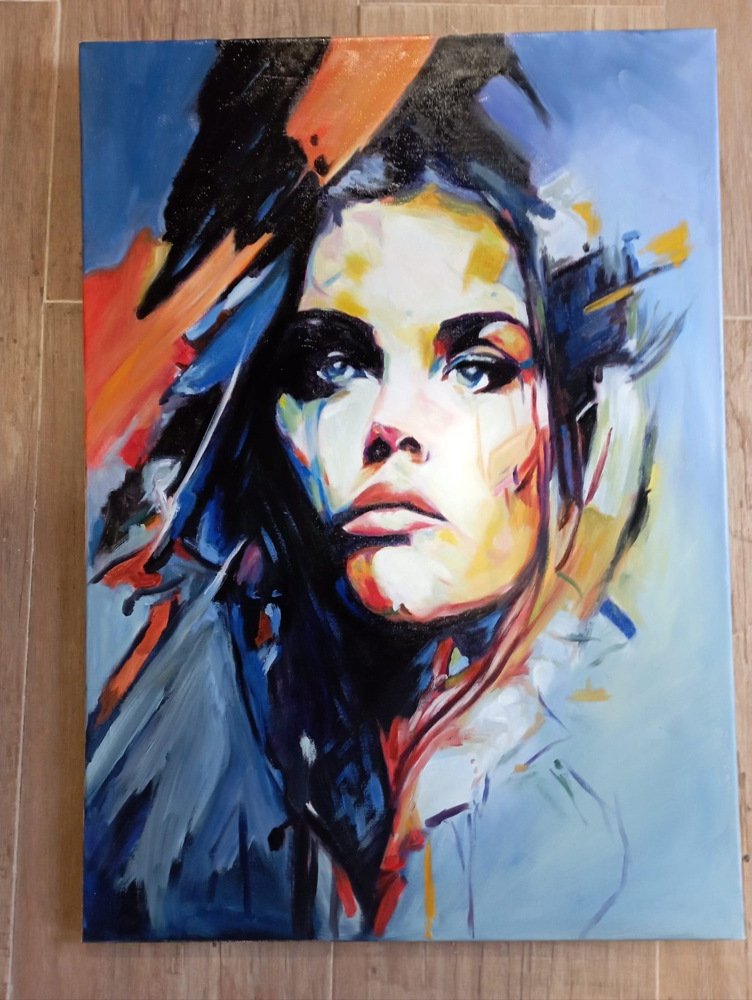

El artista

Bienvenidos al universo de Chema Martín. Esta galería muestra su obra en óleo, pastel y bolígrafo, con la emoción y el detalle de cada trazo. Especialista en retratos, pero sin limitarse a ellos, explora distintas temáticas para transmitir su visión.
Artista versátil, capta la esencia de cada sujeto. Su obra abarca retratos, bodegones, paisajes y animales. Con la luz, el color y la emoción, crea piezas que conectan con quien las mira y siguen evolucionando.
Con varias décadas de oficio, ha ido perfeccionando su arte. La pintura le ha llevado a probar técnicas y temas, siempre buscando avanzar y superar sus propios límites.